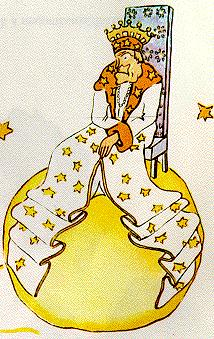

Is í áit a raibh sé réigiún na n-astaróideach 325, 326, 327, 328, 329
agus 3350. Chuir sé tús lena aistear mar sin trí chuairt a thabhairt
orthu siúd ar lorg gnó a choinneodh ag imeacht é agus a
dhéanamh foghlama.
An chéad cheann acu, bhí rí ina chónaí ann. Bhí an rí seo in
éide chorcra agus eirmín, agus é ina shuí ar rí chathaoir a bhí an-
simplí ach maorga san am céanna.
- Á, seo chugam íochtarán, arsa an rí in ard a chinn chomh
luath agus a leag sé súil ar an phrionsa beag.
Agus bhí an prionsa beag ag fiafraí de féin:
- Cén dóigh a bhfuil aithne aige orm nuair nach bhfaca sé mé
riamh cheana?
Ní raibh a fhios aige gurb áit an-simplí an domhan darle ríthe.
Is íochtarán, dar leo, gach aon duine.
- Gabh anseo go bhfeice mé níos fearr thú, arsa an rí leis, agus
bród mór air go raibh sé ina rí ar dhuine éigin sa deireadh.
Bhreathnaigh an prionsa beag ina thimpeall ag lorg áit le sui
síos, ach bhí an pláinéad ar fad clúdaithe leis an bhrat álainn
eirmín. D'fhan sé ina sheasamh mar sin, agus ó tharla go raibh sé
tuirseach, rinne sé meánfach.
-Tá sé i gcoinne béasaíoch ta meánfach a dhéanamh i láthair rí,
a deir an rí leis. Crosaim ort é.
- Ní thig liom gan a dhéanamh, arsa an pionsa beag agus
cearthaí air. Tá mé i ndiaidh turas fada a chur díom agus ní
bhfuair mé codladh na hoiche...
-Maith go leor, arsa an rí, ordaim duit meánfach a dhéanamh.
Ní fhaca mé duine ag meánfach leis na cianta cairbreacha. Is
iontach an rud é, dar liom, meánfach. Seo! Déan meánfach eile.
Sin ordú.
-Cuireann sé sin faitíos orm...ní féidir liom níos mó...a deir an
prionsa beag, agus lasadh ina ghnúis.
- Hum, hum! a d'fhreagair an rí. Más mar sin atá, ordaim duit
meánfach seal agus seal eile...
Tháinig briotaireacht ar a chaint mar a bheadh rud éigin á
chrá.
Óir ba mhórleis an rí i ndeireadh na dála go mbeadh ómós ag
dul dá údarás. Ní thiocfadh leis cur suas le heasumhlaíocht. Rí a

bhí ann nach raibh teorainn lena chumhacht. Ach ó tharla gur rí
an-chneasta a bhí ann, ní thugadh sé uaidh ach orduithe réasúnta.
“Dá n-ordóinnse,” a deireadh sé go minic “dá n-ordóinnse do
ghinearál de mo chuid é féin a thiontú ina éan mara agus dá
mb'ea nach ndéanfadh sé rud orm, ní ar an ghinearál a bheadh
an locht. Is ormsa a bheadh an locht.”
- An bhfuil cead agam suí síos? a d'fhiafraigh an prionsa beag
go faiteach.
-Ordaím duit suí síos, a d'fhreagair an rí; ag tarraingt binn dá
bhrat eirmín chuige féin go maorga.
Ach bhí an prionsa beag ag déanamh iontais.
Pláinéad beag bídeach a bhí ann. Cad é a bhí á rialú ag an rí ar
chor ar bith?
-A rí uasail, a dúirtsé...gabhaim pardún agat as an cheist a chur
Ort...
- Ordaím duit ceist a chur orm, arsa an rí go tapa.
- A rí uasail, cad é atá á rialú agat?
- Gach rud, arsa an rí go mín macánta.
- Gach rud?
Le comhartha beag dá lámh thaispeáin an rí a phláinéad féin,
na pláinéid eile agus na réaltaí.
- Gach rud ar fad? arsa an prionsa beag.
- Gach rud ar fad...a d'fhreagair an rí.
Óir ní hé amháin nach raibh teorainn lena chumhacht mar rí,
ní raibh críoch lena chumhacht ach oiread.
- Agus tá na réaltaí ag géilleadh duit?
- Cinnte dearfa, arsa an rí leis. Géilleann siad ar an toirt. Ní
chuirim suas le míréir.
A leithéid sin de chumhacht, chuir sé ardiontas ar an phrionsa
beag. Dá mbeadh a leithéid aige féin, d'fhéadfadh sé an ghrian a
fheiceáil ag dul faoi, chan daichead a ceathair uair amháin, ach
seachtó a dó, nó céad fiú, nó b'fhéidir dhá chéad, gan oiread agus
a chathaoir a bhogadh! Mhothaigh sé cumha ag teacht air nuair
a chuimhnigh sé ar a phláinéad beag féin agus é fágtha ina
dhiaidh aige; mar sin fuair sé de chroí gar a iarraidh ar an rí:
-Ba mhaith liom an ghrian a fheiceáil ag dul faoi. Más é do thoil
é...Ordaigh don ghrian dul faoi....
- Dá n-ordóinn do ghinecarál de mo chuid eitilt ó bhláth go
bláth ar nós féileacáin, nó traigéide a scríobh nó é féin a thiontú
ina éan mara, agus dá mb'ea nár chuir sé an t-ordú i gcrích, cé acu
airsean nó ormsa a bheadh an locht?
- Ortsa, a dúirt an prionsa beag go daingean dearfa.
- Go díreach. Ní cearta éileamh ar dhuine ach an rud atá sé in
ann a thabhairt, a d'fhreagair an rí. Tá an t-údarás bunaithe sa
chéad dul síos ar an réasún. Má ordaíonn tú do do mhuintir iad
féin a chaitheamh amach san fharraige, éireoidh siad amach i do
choinne. Tá an umhlaíocht ag dul domsa, mar go dtugaim
orduithe réasúnta uaim.
- Ach cad mar gheall ar an fhuineadh gréine a d'iarr mé, a
mheabhraigh an prionsa beag dó, óir ní dhéanadh sé dearmad
choíche ar cheist ar bith a bhí fiafraithc aige.
- An fuinneadh gréine sin agat, gheobhaidh tú é. Éileoidh mé
féin é. Ach ó tharla ealaín an rialacháin bheith agam, fanfaidh mé
go dtí go mbíonn cúrsaí i gceart.
- Agus cén uair a bheas sé sin amhlaidh, a d'fhiafraigh an
prionsa beag.
- Heim, heim! a d'fhreagair an rí, agus é ag ceadú caileandar
móra bhí aige, Heim, heim! beidh sé timpeall...timpeall...beidh
sé ann an tráthnóna seo timpeall fiche go dtí a hocht! Agus tífidh
tú chomh breá agus a ghéilltear dom.
Rinne an prionsa beag meánfach. Bhí aiféala air de bharr an
fuineadh gréine bheith imithe amú air. Agus chomh maith leis
sin, bhí beagán fadála ag teacht air cheana féin:
- Níl a dhath eile le déanamh agam anseo, a dúirt sé leis an rí.
Beidh mé ag imeacht liom!
- Ná himigh, arsa an rí, mar ba mhór an chúis bhróid dó
íochtarán bheith aige. Ná himigh, ceapfaidh mé i d'aire stáit thú!
- Aire! Cén sórt aire?
- Aire...aire dlí agus cirt!
- Ach níl duine ar bith ann leis an dlí a chur air!
- Ní bheadh a fhios agat, a deir an rí leis. Ní dhearna mé cuairt
mo ríochta go fóill. Tá mé aosta go maith, níl slí ar bith agam le
carráiste a choinneáil, agus fágann siúl na gcos tuirseach mé.
- Ó, tá sé feicthe agamsa cheana, a dúirt an prionsa beag, ag
cromadh síos ag breathnú ar an taobh eile den phláinéad. Níl
duine ar bith thíos ansin ach oiread..
- Cuir an dlí ort féin mar sin, arsa an rí. Sin é an is deacra
Is deacra go mór breith a thabhairt ort fein ná ar dhuine eile. Má
éiríonn leat breith chothrom a thabhairt ort féin, is ionann sin
agus a rá gur Saoi i gceart thú
- Ach, a deir an prionsa beag, thig liom breith a thabhairt orm
féin in aon áit. Ní gá dom bheith i mo chónaí anseo.
-Heim, heim! a dúirt an rí, creidim go bhfuil seanfhrancach ar
mo phláinéad in áit éigin. Cluinim é san oíche. Thiocfadh leat an
dlí a chur an an fhrancach sin. Féadann tú breith an bháis a
thabhairt air ó am go chéile. Mar sin beidh a bheo ag brath ar
thusa bheith cóir. Ach bhéarfaidh tú pardún - gach uair agus é
a choigilt. Níl ann ach an t-aon cheann amháin.
- Ní maith liom, arsa an prionsa beag, ní maith liom bheith ag
tabhairt breith an bháis ar dhaoine, agus sílim go mbeidh mé ag
imeacht liom.
- Ná déan, arsa an rí.
Ach bhí gach rud réidh agan phrionsa beag agus níor theastaigh
uaidh an seanrí a ghortú:
- Más toil le do Mhórgacht go ndéanfar rud ort go gasta,
d'fhéadfá ordú réasúnta a thabhairt dom. D'fhéadfá a ordú dom
imeacht liom i gceann bomaite. Títhear dom go bhfuil cúrsaí i
gceart...
Níor thug an rí freagra ar bith air, mar sin d'fhan an phrionsa
beag bomaite idir dhá chomhairle, ansin lig sé osna agus d'imigh
leis.
-Déanfaidh mé ambasadóir díot, a ghlaoigh an rí go deifreach
ina dhiaidh.
Bhí cuma an údaráis go tréan air.
Nach bhfuil daoine fásta an-ait, a bhí an prionsa beag ag rá leis
féin le linn an turais.